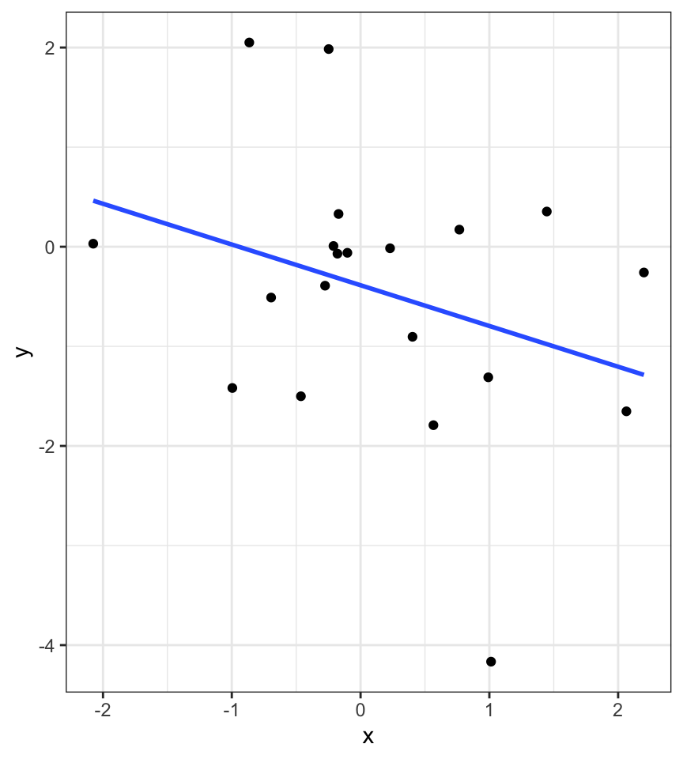
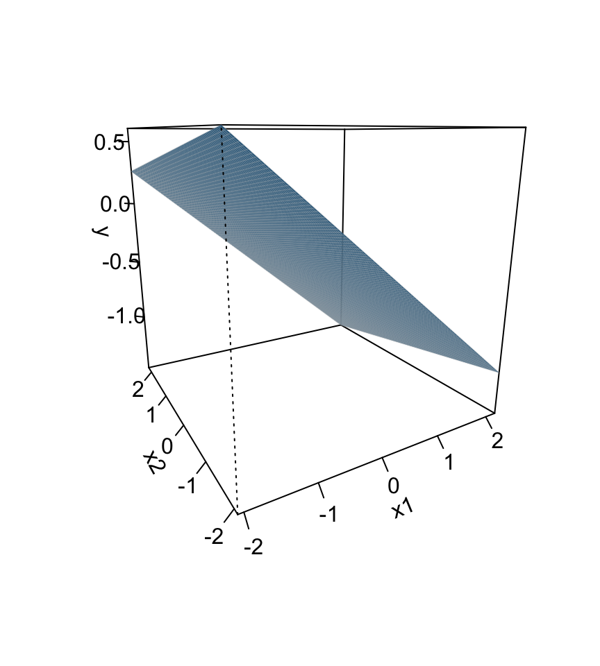
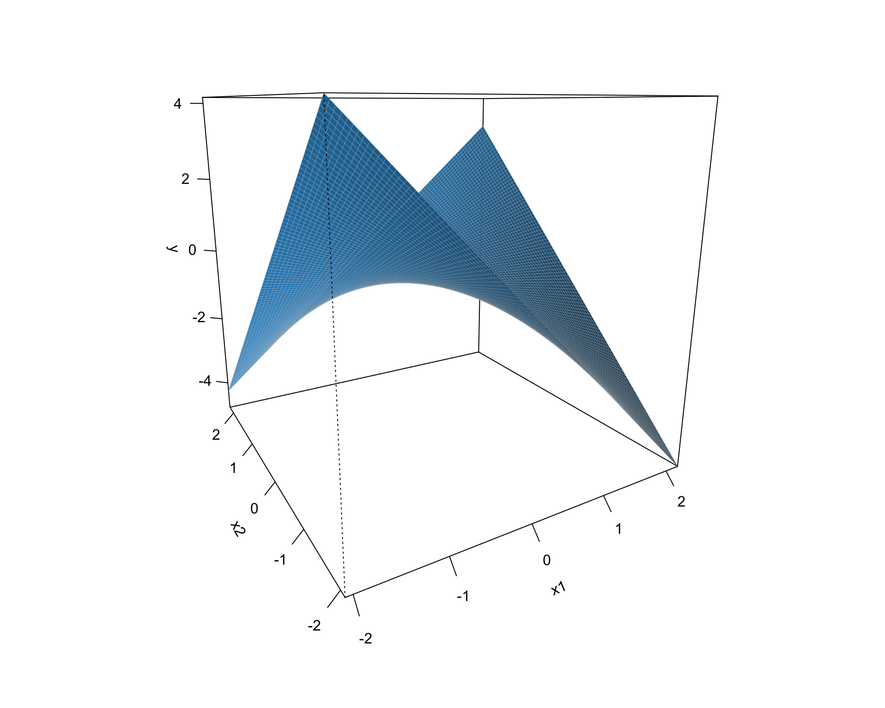
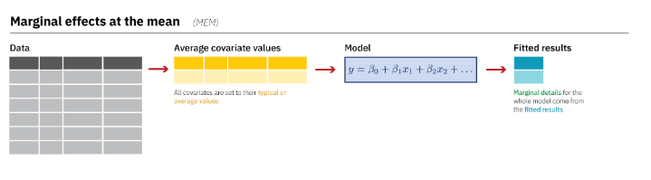
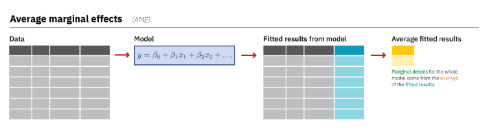

Interactions
Last time…
Introduction to interactions with one categorical and one continuous predictor
Today
Two continuous predictors
What are interactions?
When we have two variables, A and B, in a regression model, we are testing whether these variables have additive effects on our outcome, Y. That is, the effect of A on Y is constant over all values of B.
- Example: Drinking coffee and hours of sleep have additive effects on alertness; no matter how any hours I slept the previous night, drinking one cup of coffee will make me .5 SD more awake than not drinking coffee.
What are interactions?
However, we may hypothesis that two variables have joint effects, or interact with each other. In this case, the effect of A on Y changes as a function of B.
Example: Chronic stress has a negative impact on health but only for individuals who receive little or no social support; for individuals with high social support, chronic stress has no impact on health.
This is also referred to as moderation.
The “interaction term” is the regression coefficient that tests this hypothesis.
Univariate regression
Multivariate regression

Multivariate regression with an interaction
Example
Here we have an outcome (Stress) that we are interested in predicting from trait Anxiety and levels of social Support.
library(tidyverse)
stress.data = read_csv("https://raw.githubusercontent.com/uopsych/psy612/master/data/stress.csv")
psych::describe(stress.data, fast = T) vars n mean sd min max range se
id 1 118 59.50 34.21 1.00 118.00 117.00 3.15
Anxiety 2 118 7.61 2.49 0.70 14.64 13.94 0.23
Stress 3 118 5.18 1.88 0.62 10.32 9.71 0.17
Support 4 118 8.73 3.28 0.02 17.34 17.32 0.30
group 5 118 NaN NA Inf -Inf -Inf NA
Call:
lm(formula = Stress ~ Anxiety * Support, data = stress.data)
Residuals:
Min 1Q Median 3Q Max
-3.8163 -1.0783 0.0373 0.9200 3.6109
Coefficients:
Estimate Std. Error t value Pr(>|t|)
(Intercept) -2.73966 1.12101 -2.444 0.01606 *
Anxiety 0.61561 0.13010 4.732 6.44e-06 ***
Support 0.66697 0.09547 6.986 2.02e-10 ***
Anxiety:Support -0.04174 0.01309 -3.188 0.00185 **
---
Signif. codes: 0 '***' 0.001 '**' 0.01 '*' 0.05 '.' 0.1 ' ' 1
Residual standard error: 1.462 on 114 degrees of freedom
Multiple R-squared: 0.4084, Adjusted R-squared: 0.3928
F-statistic: 26.23 on 3 and 114 DF, p-value: 5.645e-13\[\hat{Stress} = -2.74 + 0.62(Anx) + 0.67(Sup) + -0.04(Anx \times Sup)\]
Conditional effects and simple slopes
The regression line estimated in this model is quite difficult to interpret on its own. A good strategy is to decompose the regression equation into simple slopes, which are determined by calculating the conditional effects at a specific level of the moderating variable.
- Simple slope: the equation for Y on X at different levels of Z; but also refers to only the coefficient for X in this equation
- Conditional effect: the slope coefficients in the full regression model which can change. These are the lower-order terms associated with a variable.
The conditional nature of these effects is easiest to see by “plugging in” different values for one of your variables. Return to the regression equation estimated in our stress data:
\[\hat{Stress} = -2.74 + 0.62(\text{Anx})+ 0.67(\text{Sup})+ -0.04(\text{Anx} \times \text{Sup})\]
The conditional nature of these effects is easiest to see by “plugging in” different values for one of your variables. Return to the regression equation estimated in our stress data:
\[\hat{Stress} = -2.74 + 0.62(\text{Anx})+ 0.67(\text{Sup})+ -0.04(\text{Anx} \times \text{Sup})\]
Set Support to 5
\[ \begin{aligned} \hat{Stress} &= -2.74 + 0.62(\text{Anx})+ 0.67(5)+ -0.04(\text{Anx} \times 5) \\ &= -2.74 + 0.62(\text{Anx})+ 3.35+ -0.2(\text{Anx}) \\ &= 0.61 + 0.42(\text{Anx}) \end{aligned} \]
The conditional nature of these effects is easiest to see by “plugging in” different values for one of your variables. Return to the regression equation estimated in our stress data:
\[\hat{Stress} = -2.74 + 0.62(\text{Anx})+ 0.67(\text{Sup})+ -0.04(\text{Anx} \times \text{Sup})\]
Set Support to 10
\[ \begin{aligned} \hat{Stress} &= -2.74 + 0.62(\text{Anx})+ 0.67(10)+ -0.04(\text{Anx} \times 10) \\ &= -2.74 + 0.62(\text{Anx})+ 6.7+ -0.4(\text{Anx}) \\ &= 3.96 + 0.22(\text{Anx}) \end{aligned} \]
Plotting interactions
What is this plotting?

Testing simple slopes
library(emmeans)
anx.vals = list(Anxiety = c(5,6,7))
simple_slopes = emtrends(imodel, var = "Support", ~Anxiety, at = anx.vals)
simple_slopes Anxiety Support.trend SE df lower.CL upper.CL
5 0.458 0.0519 114 0.356 0.561
6 0.417 0.0493 114 0.319 0.514
7 0.375 0.0502 114 0.275 0.474
Confidence level used: 0.95 Anxiety Support.trend SE df t.ratio p.value
5 0.458 0.0519 114 8.835 <.0001
6 0.417 0.0493 114 8.443 <.0001
7 0.375 0.0502 114 7.465 <.0001Testing simple slopes
m.anx = mean(stress.data$Anxiety)
s.anx = sd(stress.data$Anxiety)
anx.vals = list(Anxiety = c(m.anx - s.anx,
m.anx,
m.anx + s.anx))
simple_slopes = emtrends(imodel, var = "Support", ~Anxiety, at = anx.vals)
test(simple_slopes) Anxiety Support.trend SE df t.ratio p.value
5.13 0.453 0.0514 114 8.818 <.0001
7.61 0.349 0.0524 114 6.666 <.0001
10.10 0.245 0.0705 114 3.480 0.0007Simple slopes - Significance tests
What if you want to compare slopes to each other? How would we test this?
The test of the interaction coefficient is equivalent to the test of the difference in slopes at levels of Z separated by 1 unit.
Or you can use the emmeans package.
simple_slopes = emtrends(imodel, var = "Support",
pairwise~Anxiety,
at = anx.vals, adjust = "none")
simple_slopes$emtrends
Anxiety Support.trend SE df lower.CL upper.CL
5.13 0.453 0.0514 114 0.351 0.555
7.61 0.349 0.0524 114 0.245 0.453
10.10 0.245 0.0705 114 0.106 0.385
Confidence level used: 0.95
$contrasts
contrast estimate SE df t.ratio
Anxiety5.12715526773916 - Anxiety7.61433127118644 0.104 0.0326 114 3.188
Anxiety5.12715526773916 - Anxiety10.1015072746337 0.208 0.0651 114 3.188
Anxiety7.61433127118644 - Anxiety10.1015072746337 0.104 0.0326 114 3.188
p.value
0.0018
0.0018
0.0018Perhaps you noted that the t-statistic and p-values are the same… The OLS model constrains the change in slope to be equal equivalent across values of the moderator.

Marginal effects
Marginal effects – or additional effects – refer to what happens to an outcome, Y, when a predictor, X, changes a little. (i.e., a slope)
For example, in the equation
\[Y = -1 + 2X\]
The marginal effect of X on Y is 2. (You can use calculus, specifically derivatives, to calculate marginal effects.)
Marginal effects
Marginal effects are easy to calculate when we have additive effects, but now that we’ve introduced joint effects, things become more complicated.
We’ve already used the emmeans package to decompose a regression equation into simple slopes. In that instance, we tell the package at which values of the moderator, Z, we want to estimate slopes of X.
But we can also use this package to estimate marginal effects.
Marginal effects
Anxiety Anxiety.trend SE df lower.CL upper.CL
7.61 0.251 0.0649 114 0.123 0.38
Confidence level used: 0.95 What does this value tell us?
Marginal effects
This is a marginal effect at the mean, or the effect of Anxiety when all predictors are at their average value.
Why might this be useful? Why might this be not so useful?
Marginal effects
Another option is the average marginal effect, which estimates the slope for each individual observation (row) and then calculates the average of these.
Marginal effects
Term Estimate Std. Error z Pr(>|z|) 2.5 % 97.5 %
Anxiety 0.358 0.0724 4.95 <0.001 0.2166 0.500
Anxiety 0.244 0.0650 3.75 <0.001 0.1165 0.371
Anxiety 0.176 0.0696 2.52 0.0117 0.0391 0.312
Anxiety 0.137 0.0748 1.83 0.0666 -0.0094 0.284
Anxiety 0.384 0.0763 5.03 <0.001 0.2344 0.533
--- 226 rows omitted. See ?avg_slopes and ?print.marginaleffects ---
Support 0.203 0.0806 2.52 0.0119 0.0448 0.361
Support 0.376 0.0501 7.51 <0.001 0.2783 0.475
Support 0.455 0.0515 8.82 <0.001 0.3538 0.556
Support 0.119 0.1026 1.16 0.2452 -0.0819 0.320
Support 0.404 0.0492 8.21 <0.001 0.3076 0.501
Prediction type: response
Columns: rowid, type, term, estimate, std.error, statistic, p.value, conf.low, conf.high, predicted, predicted_hi, predicted_lo, Stress, Anxiety, Support Marginal effects
Term Contrast Estimate Std. Error z Pr(>|z|) 2.5 % 97.5 %
Anxiety mean(dY/dX) 0.251 0.0649 3.87 <0.001 0.124 0.378
Support mean(dY/dX) 0.349 0.0524 6.67 <0.001 0.246 0.452
Prediction type: response
Columns: type, term, contrast, estimate, std.error, statistic, p.value, conf.low, conf.high Marginal effects
The main advantage of the average marginal effect is that each individual slope prediction uses values that actually exist in the data, and so your average marginal effect is a better representation of your sample.
How much does this matter? For OLS and the models covered in PSY 612, not much. Simple slopes are by far the most common way to decompose interaction terms and are expected. Marginal effects are sometimes seen, and usually described using the marginal effect at the mean (MEM), not the average marginal effect (AME).
Marginal effects
BUT, as you move into more complicated models (polynomials later this term, logistic regression, etc next term), there are less clear standards for how to report models and bigger differences between the MEM and the AME. Keep this in your back pocket for future work.
Also see this really great blog post by Andrew Heiss.
Centering
The regression equation built using the raw data is not only difficult to interpret, but often the terms displayed are not relevant to the hypotheses we’re interested.
- \(b_0\) is the expected value when all predictors are 0, but this may never happen in real life
- \(b_1\) is the slope of X when Z is equal to 0, but this may not ever happen either.
Centering
Centering your variables by subtracting the mean from all values can improve the interpretation of your results.
- Remember, a linear transformation does not change associations (correlations) between variables. In this case, it only changes the interpretation for some coefficients
Applying one function to multiple variables
stress.c = stress.data %>%
mutate(
across( c(Anxiety, Support) , ~.x-mean(.x) )
)
psych::describe(stress.c, fast = T) vars n mean sd min max range se
id 1 118 59.50 34.21 1.00 118.00 117.00 3.15
Anxiety 2 118 0.00 2.49 -6.92 7.03 13.94 0.23
Stress 3 118 5.18 1.88 0.62 10.32 9.71 0.17
Support 4 118 0.00 3.28 -8.71 8.61 17.32 0.30
group 5 118 NaN NA Inf -Inf -Inf NAModel with centered predictors
Call:
lm(formula = Stress ~ Anxiety * Support, data = stress.c)
Residuals:
Min 1Q Median 3Q Max
-3.8163 -1.0783 0.0373 0.9200 3.6109
Coefficients:
Estimate Std. Error t value Pr(>|t|)
(Intercept) 4.99580 0.14647 34.108 < 2e-16 ***
Anxiety 0.25122 0.06489 3.872 0.000181 ***
Support 0.34914 0.05238 6.666 9.82e-10 ***
Anxiety:Support -0.04174 0.01309 -3.188 0.001850 **
---
Signif. codes: 0 '***' 0.001 '**' 0.01 '*' 0.05 '.' 0.1 ' ' 1
Residual standard error: 1.462 on 114 degrees of freedom
Multiple R-squared: 0.4084, Adjusted R-squared: 0.3928
F-statistic: 26.23 on 3 and 114 DF, p-value: 5.645e-13Model with uncentered predictors
Call:
lm(formula = Stress ~ Anxiety * Support, data = stress.data)
Residuals:
Min 1Q Median 3Q Max
-3.8163 -1.0783 0.0373 0.9200 3.6109
Coefficients:
Estimate Std. Error t value Pr(>|t|)
(Intercept) -2.73966 1.12101 -2.444 0.01606 *
Anxiety 0.61561 0.13010 4.732 6.44e-06 ***
Support 0.66697 0.09547 6.986 2.02e-10 ***
Anxiety:Support -0.04174 0.01309 -3.188 0.00185 **
---
Signif. codes: 0 '***' 0.001 '**' 0.01 '*' 0.05 '.' 0.1 ' ' 1
Residual standard error: 1.462 on 114 degrees of freedom
Multiple R-squared: 0.4084, Adjusted R-squared: 0.3928
F-statistic: 26.23 on 3 and 114 DF, p-value: 5.645e-13Standardized regression equation
If you’re interested in getting the standardized regression equation, you can follow the procedure of standardizing your variables first and then entering them into your linear model.
An important note: You must take the product of the Z-scores, not the Z-score of the products to get the correct regression model.
Applying one function to all numeric variables
stress.z = stress.data %>%
mutate(across(where(is.numeric), ~(. - mean(., na.rm=T))/sd(., na.rm=T)))
head(stress.z)# A tibble: 6 × 5
id Anxiety Stress Support group
<dbl> <dbl> <dbl> <dbl> <chr>
1 -1.71 1.03 -1.06 -0.784 Tx
2 -1.68 -0.814 0.975 0.0540 Control
3 -1.65 -0.414 0.530 0.553 Tx
4 -1.62 0.539 1.88 0.833 Tx
5 -1.59 -0.00612 0.0464 -0.970 Control
6 -1.56 0.218 -0.0294 -0.372 Tx Standardized equation
Call:
lm(formula = Stress ~ Anxiety * Support, data = stress.z)
Residuals:
Min 1Q Median 3Q Max
-2.03400 -0.57471 0.01989 0.49037 1.92453
Coefficients:
Estimate Std. Error t value Pr(>|t|)
(Intercept) -0.09818 0.07807 -1.258 0.211093
Anxiety 0.33302 0.08602 3.872 0.000181 ***
Support 0.60987 0.09149 6.666 9.82e-10 ***
Anxiety:Support -0.18134 0.05688 -3.188 0.001850 **
---
Signif. codes: 0 '***' 0.001 '**' 0.01 '*' 0.05 '.' 0.1 ' ' 1
Residual standard error: 0.7792 on 114 degrees of freedom
Multiple R-squared: 0.4084, Adjusted R-squared: 0.3928
F-statistic: 26.23 on 3 and 114 DF, p-value: 5.645e-13Unstandardized equation
Call:
lm(formula = Stress ~ Anxiety * Support, data = stress.data)
Residuals:
Min 1Q Median 3Q Max
-3.8163 -1.0783 0.0373 0.9200 3.6109
Coefficients:
Estimate Std. Error t value Pr(>|t|)
(Intercept) -2.73966 1.12101 -2.444 0.01606 *
Anxiety 0.61561 0.13010 4.732 6.44e-06 ***
Support 0.66697 0.09547 6.986 2.02e-10 ***
Anxiety:Support -0.04174 0.01309 -3.188 0.00185 **
---
Signif. codes: 0 '***' 0.001 '**' 0.01 '*' 0.05 '.' 0.1 ' ' 1
Residual standard error: 1.462 on 114 degrees of freedom
Multiple R-squared: 0.4084, Adjusted R-squared: 0.3928
F-statistic: 26.23 on 3 and 114 DF, p-value: 5.645e-13Interactions with two categorical variables
If both X and Z are categorical variables, the interpretation of coefficients is no longer the value of means and slopes, but means and differences in means.
Example

Recall our hand-eye coordination study (for a reminder of the study design, see the ANOVA lecture):
handeye_d = read.csv("https://raw.githubusercontent.com/uopsych/psy612/master/data/hand_eye_task.csv")
glimpse(handeye_d)Rows: 180
Columns: 4
$ X <int> 1, 2, 3, 4, 5, 6, 7, 8, 9, 10, 11, 12, 13, 14, 15, 16, 17, 18, 1…
$ Time <dbl> 623.1855, 547.8381, 709.5921, 815.2066, 719.5926, 732.8989, 566.…
$ Speed <chr> "Slow", "Slow", "Slow", "Slow", "Slow", "Slow", "Slow", "Slow", …
$ Noise <chr> "None", "None", "None", "None", "None", "None", "None", "None", …# A tibble: 9 × 3
# Groups: Speed, Noise [9]
Speed Noise n
<chr> <chr> <int>
1 Fast Controllable 20
2 Fast None 20
3 Fast Uncontrollable 20
4 Medium Controllable 20
5 Medium None 20
6 Medium Uncontrollable 20
7 Slow Controllable 20
8 Slow None 20
9 Slow Uncontrollable 20Model summary
Call:
lm(formula = Time ~ Speed * Noise, data = handeye_d)
Residuals:
Min 1Q Median 3Q Max
-316.23 -70.82 4.99 79.87 244.40
Coefficients:
Estimate Std. Error t value Pr(>|t|)
(Intercept) 287.234 25.322 11.343 < 2e-16 ***
SpeedMedium 205.483 35.811 5.738 4.27e-08 ***
SpeedSlow 289.439 35.811 8.082 1.11e-13 ***
NoiseNone 42.045 35.811 1.174 0.24200
NoiseUncontrollable -19.072 35.811 -0.533 0.59502
SpeedMedium:NoiseNone -9.472 50.644 -0.187 0.85185
SpeedSlow:NoiseNone 12.007 50.644 0.237 0.81287
SpeedMedium:NoiseUncontrollable -169.023 50.644 -3.337 0.00104 **
SpeedSlow:NoiseUncontrollable 36.843 50.644 0.727 0.46792
---
Signif. codes: 0 '***' 0.001 '**' 0.01 '*' 0.05 '.' 0.1 ' ' 1
Residual standard error: 113.2 on 171 degrees of freedom
Multiple R-squared: 0.6109, Adjusted R-squared: 0.5927
F-statistic: 33.56 on 8 and 171 DF, p-value: < 2.2e-16Plotting results

Remember, regression and ANOVA are mathematically equivalent – both divide the total variability in \(Y\) into variability overlapping with (“explained by”) the model and residual variability.
What differs is the way results are presented. The regression framework is excellent for continuous variables, but interpreting the interactions of categorical variables is more difficult. So we’ll switch back to the ANOVA framework next time and talk about…
Next time
Factorial ANOVA